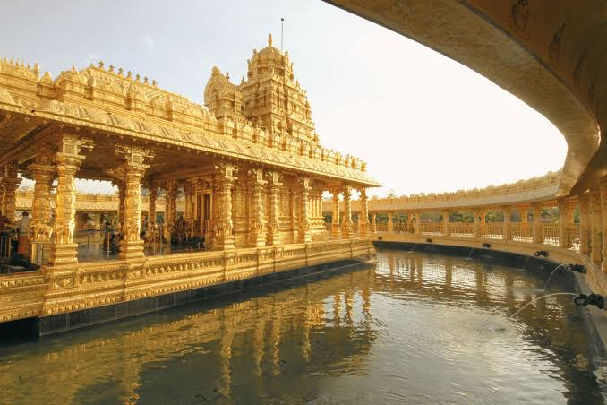
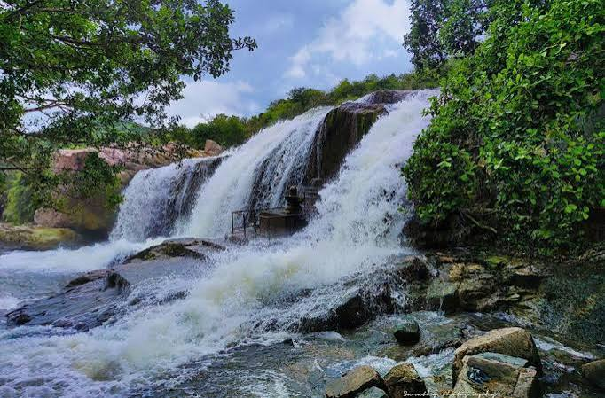
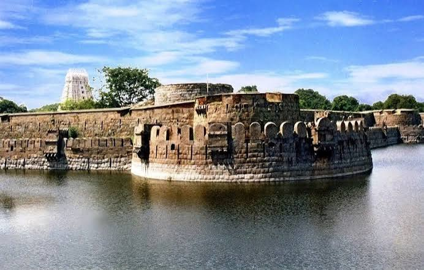

Vellore had the previlege of being the seat of the Pallava, Chola, Nayak, Maratha, Arcot Nawabs and Bijapur Sultan Kingdoms. It was described as the best and strongest fortress in the Carnatic War in the 17th Century. It was witnessed the massacre of European soldier during the mutiny of 1806. Vellore district lies between 12° 15’ to 13° 15’ North latitudes and 78° 20’ to 79° 50’ East longitudes in Tamilnadu State. The geographical area of this district is 1336.42 Sq.Kms. The total population as per 2011 Census is 39,36,331.



Sri Lakshmi Narayani Golden Temple complex inside the Thirupuram spiritual park is nestled at the base of a small range of green hills at Thirumalaikodi (or simply Malaikodi) Vellore in Tamil Nadu, India. It is 120 km from Tirupati, 145 km from Chennai, 160 km from Pondicherry and 200 km from Bengaluru. The Maha Kumbhabhishekam or consecration of the temple and its chief deity, Lakshmi or Maha Lakshmi, the Hindu goddess of wealth, was held on 24 August 2007, and devotees from all religions and backgrounds are welcome to visit.
The salient feature of 'Thirupuram' is the Lakshmi Narayani temple whose Vimanam and Ardha Mandapam is covered with pure gold, housing the deity Sri Lakshmi Narayani (female consort/wife of Vishnu Narayana). The temple is located on 40 hectares (100 acres) of land and has been constructed by the Vellore-based charitable trust, Sri Narayani Peedam, headed by its spiritual leader Sri Sakthi Amma also known as 'Narayani Amma'.
The temple with its gold covering, has intricate work done by artisans specialising in temple art using gold. Every single detail was manually created, including converting the gold bars into gold foils and then mounting the foils on copper. Gold foil from 9 layers to 10 layers has been mounted on the etched copper plates. Every single detail in the temple art has significance from the Vedas
Sripuram's design features a star-shaped path (Sri chakra), positioned in the middle of the lush green landscape, with a length of over 1.8 km. As one walks along this 'starpath' to reach the temple in the middle, one can also read various spiritual messages—such as the gift of the human birth itself, and the value of spirituality—along the way.
Vellore Fort is a large 16th-century fort situated in heart of the Vellore city, in the state of Tamil Nadu, India built by the Emperors of Vijayanagara. The fort was at one time the imperial capital of the Aravidu Dynasty of the Vijayanagara Empire. The fort is known for its grand ramparts, wide moat and robust masonry.
The fort's ownership passed from Emperors of Vijayanagara, to the Bijapur sultans, to the Marathas, to the Carnatic Nawabs and finally to the British, who held the fort until India gained independence. The Indian government maintains the fort with the Archaeological Department. During British rule, the Tipu Sultan's family and the last King of Sri Lanka, Sri Vikrama Rajasinha were held as prisoners in the fort. It is also a witness to the massacre of the Vijayanagara royal family of Sriranga Raya. The fort houses the Jalakanteswarar Hindu temple, the Christian St. John's Church and a Muslim mosque, of which the Jalakanteswarar Temple is famous for its magnificent carvings.[1] The first significant military rebellion against British rule, the Vellore Mutiny, erupted at this fort in 1806.
Vellore Fort is one of the most popular tourist destinations for both domestic and international visitors to Tamil Nadu.